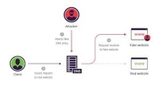
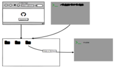
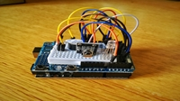
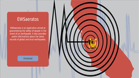
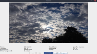

| NAME |
DESCRIPTION |
LINK |
| BioSecure |
Security system that monitors the use of your PC using facial recognition |
|
| DNS_Cache_Poisoning_Exploit |
This attack consists of inserting a DNS record into the cache of the DNS nameserver |
 |
| Grid-FTP-Client-Server-Application |
The aim of the project is to build a distributed infrastructure based on the FTP protocol in order to guarantee a higher level of performance and reliability |
 |
| SQLinjection_Training |
Platform to simulate an SQL Injection attack |
|
| TermometroArduino |
Thermometer built and designed in Arduino that monitors the surrounding temperature using a thermistor |
 |
| EWSaeratos |
EWSaeratos is a project developed to increase civil protection that launchs civil warnings in case of earthquake |
 |
| EBFNflora |
Application built and designed in arduino that monitors useful aspects for the cultivation of plants, such as: quantity of light, temperature and air pollution |
|
| EBFweather |
EBFweather is a web application that allows the user to view the weather forecast for the following hours in a specific Java window |
 |